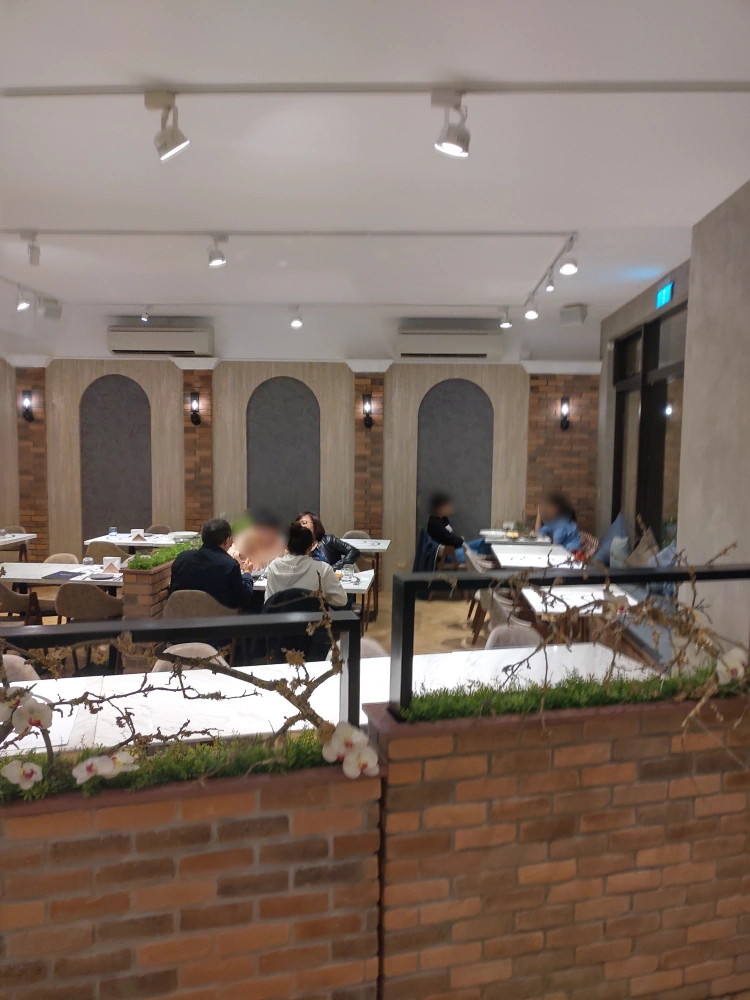

[竹北] Sauté Restaurant 索鉄
| 餐廳名稱: | Sauté Restaurant 索鉄 |
|---|---|
| 地 址: | 新竹縣竹北市嘉豐南路一段58號 |
| 營業時間: | 週三至週一 11:00-15:00 17:30-21:30 |
| 每週二 公休 | |
| 電話 : | 03 658 2298 |
Sauté Restaurant 索鉄 是一間喜歡用台灣食材的歐陸創作料理餐廳， 其他的義大利餐廳 或 法式餐廳，可能會標榜原料是義大利或法國進口，這間倒是反其道而行，大量使用台灣食材， 這樣其實比較環保，炭排放量是比較低的。
索鉄 的門口。
索鉄 的內部環境。 
索鉄的菜單， 常常在改，乾脆大家連去官網看好了。
第一道菜，炙烤海鮮沙拉 佐 柚子檸檬醋醬。海鮮有 花枝、魚、蝦， 調味不錯。
北海道干貝鮮蝦鹹蛋筊白筍天使麵。 不愧是 索鉄，鹹蛋都用上了。蝦 跟 第一道菜重複，不過念在它好吃，就算了。 所謂的 天使麵，英文是 angel hair ，自然是指像頭髮那麼細的麵，普通人可能因為 “髮” 沒翻譯，想不懂 天使 跟 這種麵有啥關係。 這道菜調味不錯。
舒肥桂丁土雞腿 釀 花蓮剝皮辣椒、剝皮辣椒騷莎。舒肥是法語的 sous vide，是指低溫真空烹調，雖然肉會比較軟，但也會少了炭火的香氣，是否用舒肥手法， 還是直火烹調，見仁見智。
桂丁雞 是 近幾年出名的品種，花了八年，才培育到第十代桂丁雞，培育人因為當年受到頂呱呱董事長 史桂丁先生的栽培，送去日本學當一位雛雞鑑別師， 過程非常辛苦，收穫也很大。 因此，懷著感恩的心，這次培育出來的雞，就命名為桂丁雞，特色是 皮薄、肉結實，羽色、膚色也比一般土雞白。
剝皮辣椒似乎大本營就是花蓮，記得之前買了花蓮的 花崗剝皮辣椒，很夭壽，超級辣，不過這裡的花蓮剝皮辣椒倒是還好，辣度還能接受，整道菜不錯吃。
騷莎，也就是英文的 Salsa ，有時又翻成 莎莎醬。 在西班牙文和義大利文中，“salsa” 一詞可以指任何一種醬料，所以這裡沒看到番茄丁 也不用訝異， 看起來應該是指撒在雞肉上面的醬，大概是主廚用剝皮辣椒、洋蔥等，磨碎、攪拌出來的醬料吧。
酥炸帕瑪火腿桂丁雞與帕瑪森老起士燉飯。 上面是炸雞排，中間鑲著一片帕馬火腿，炸的不錯。帕馬火腿是出產於義大利的火腿，以帕馬省的最出名。 下面是起司燉飯，因為用了 帕瑪森起司，鹹香夠味，蠻好吃的。帕馬森起司是種硬質的起司，製造過程中有煮過但是沒有擠壓。該起司是依出產地區 義大利艾米利亞-羅馬涅的帕爾馬以及艾米利亞命名的。
帳單。三人吃了兩千多。 其實，我覺得食材、烹調手法 是 值這個價錢。去吃 索鉄 最好早一點訂位，之後再去現場等，客滿，臨時打電話訂位也說客滿，想再去也去不成。 唉，優秀餐廳都這樣。